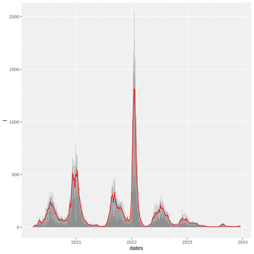
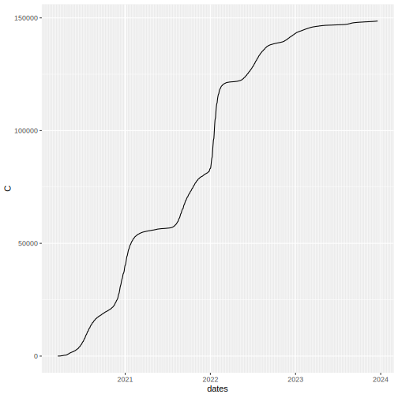
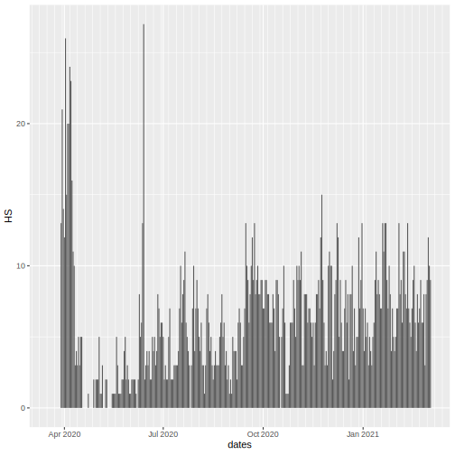
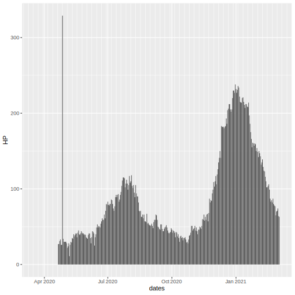
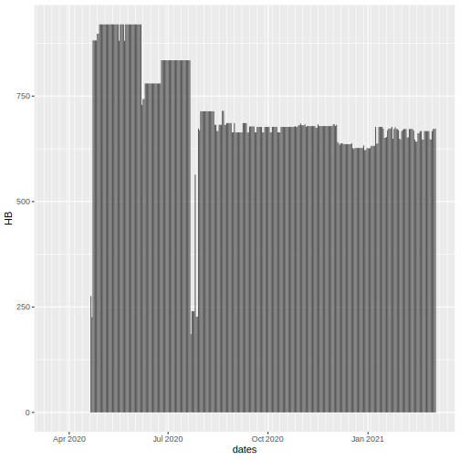
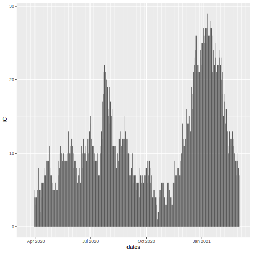
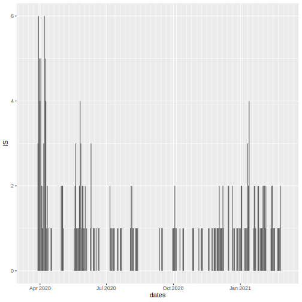
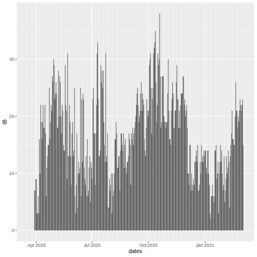

| County | Tulare |
| Estimated R | 0.8942205(0.0478962) |
| Daily Incidence | 55 |
| Cumulative Incidence | 16918 |
| Cumulative Deaths | 274 |
| Conversion Errors | 0 |
Daily Incidence

Cumulative Incidence

Cumulative Deaths

Hospitalized Confirmed COVID-19 Patients
Hospitalized Suspected COVID-19 Patients

Hospitalized Covid-19 Patients

All Hospital Beds

ICU Confirmed COVID-19 Patients

ICU Suspected COVID-19 Patients

ICU Hospital Beds

Conversion Errors

Estimated R